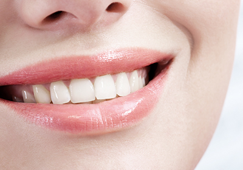
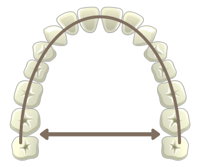
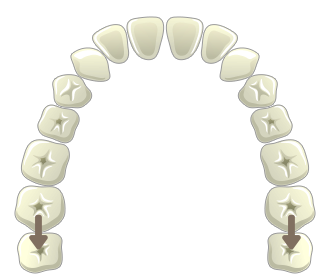
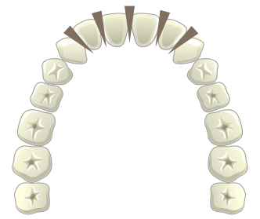

유치의 역할
유치가 빠지고
영구치가 나올 공간이
없어지게 되어
덧니가 나게 됩니다
<%=m_client_en%>
덧니는 구조상 음식물이 잘 끼고, 칫솔질도 잘 되지 않아 충치가 생길 위험성이 높아질 뿐 아니라,
나이가 들수록 치주 질환(풍치)이 생기기 쉽습니다.
또한 입을 가리고 웃게 되는 반복적인 습관으로 자신감이 없어 보이고, 심미적으로도 좋지 않은 인상을 주게 됩니다.
덧니 교정은 꼭 발치를 해야 하는 건 아닙니다.
환자분의 골격 및 얼굴의 형태, 치열의 분석을 바탕으로 정확한 진단 과정을 거쳐서 결정하게 됩니다.
덧니 교정 방법으로는 전체 치아를 수용할 수 있는 공간을 늘리거나,
수용공간은 그대로 두고 치아의 개수나 크기를 줄이는 방법이 있습니다.
치아를 배열할 공간이 매우 부족하다면 몇 개의 치아를 뺀 후
나머지 치아를 바르게 배열합니다.
이때 턱뼈의 크기와 상호관계, 최종적인 앞니의 위치 등을
종합적으로 고려하여 결정하게 됩니다.
옆모습이 정상비율과 가깝고 덧니가 심하지 않은경우
치아를 뽑지 않고 악궁을 확대하거나
어금니를 후방으로 이동하거나
각각의 치아를 날씬하게 다듬는 방법으로 교정합니다.
유치가 빠지고
영구치가 나올 공간이
없어지게 되어
덧니가 나게 됩니다

치아의 크기가 균일하게 나지 않고
크기의
차이가 있을 시
삐뚤게 나기도 합니다
턱뼈의 크기는 작아지고
치아의 크기는 변화가 없기 때문에
덧니의 발생이 증가하고 있습니다
입천장의 모양이 변하면서
치아가 삐뚤게
나기도 합니다

확장장치를 이용하여 악궁을 좌우로 확장시켜
치열에 공간을 만듭니다

돌출된 앞니를 부분적으로 뒤로 밀어
이동시켜 줍니다

치아의 옆면을 다듬어
공간을 만들어 교정합니다